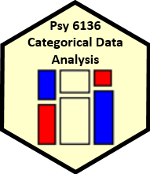

Psychology 6136: Categorical Data Analysis
- Instructor: Michael Friendly (my home page)
- Email: friendly AT yorku DOT ca
- Office: 226 BSB
- Phone: x66249
- Office hour: Wednesday: 11:30-12:30 (other times by appt.)
- Class meetings:
Tues, 2:30 am - 5:30 pm, 014A BSB, lab session: 4:30-5:30, Hebb lab, 159
BSB. The first class will be on Jan. 10.
This course is designed as a broad, applied introduction to the statistical analysis of categorical (or discrete) data, such as counts, proportions, nominal variables, ordinal variables, discrete variables with few values, continuous variables grouped into a small number of categories, etc.
- The course begins with methods designed for cross-classified table of counts, (i.e., contingency tables), using simple chi square-based methods.
- It progresses to generalized linear models, for which log-linear models provide a natural extension of simple chi square-based methods.
- This framework is then extended to comprise logit and logistic regression models for binary responses and generalizations of these models for polytomous (multicategory) outcomes.
Throughout, there is a strong emphasis on associated graphical methods for visualizing categorical data, checking model assumptions, etc. Lab sessions will familiarize the student with software using R for carrying out these analyses.
Text books and readings
Main texts
The main texts for this course are:
Supplementary readings:
- Agresti, A. (2013). Categorical Data Analysis,
3rd ed., NY: Wiley. A much more technical book, that many consider the "bible" for categorical data analysis methods.
Web site for the book.
There is also a manual for
R and S-plus users
to accompany this text.
- Fox, John. Applied Regression Analysis and Generalized Linear Models, 3rd Ed.
Sage, 2015. An excellent text on linear models; Part IV on Generalized Linear Models provides a clear and comprehensive discussion.
- Grolemund & Wickham, R for Data Science A good tutorial book on the
tidyverse approach to data analysis in R. Available free online.
-
Fox & Weisberg An R Companion to Applied Regression,
3rd Ed., Sage, 2018. There is also a web page for the book,
containing data files, R scripts and a collection of web appendices on other topics.
There will be occasional short assignments posted here and announced in class. These assignments are
ungraded, unless a graded assignment is announced in advance. Details regarding a useful way of
formatting R exercises are described in Assignment 1.
See Compiling Notebooks,
which describes how to compile HTML, PDF, or MS Word notebooks from R scripts for further details.
Please submit your assignments to me by email, as a PDF, Word, or HTML attachment
(together with the associated R file),
with
a Subject: line "PSYC 6136: Assignment XX".
To help me keep them straight, it would be most convenient to name them something like
"YourName-AssignXX.{pdf,docx,html}".
Evaluation
There are three components to your evaluation in the course: two take-home projects (each worth 40%) that will involve analysis of one or more data sets together with a research report describing the background, your analyses, results and conclusions. For these, you can use any software you like, although R is strongly encouraged.
Here is a template for a markdown .Rmd file you can use if you are working in RStudio and want to
write in R markdown.
Project 1 : a selection of data sets for the material up to and including logistic regression. Due date: Nov. 3
Project 2: a selection of data sets for the material from logistic regression to the end of the course. Due date: Dec. 15
- The remaining 20% can be earned either as
- an assignment portfolio, containing a selection of your best work (possibly edited/enhanced) on a selection of assignment questions, or by
- reading and discussing a journal article related to theory or application of categorical data analysis. For the latter, you can volunteer to give a brief (~15 min) presentation to the class (sometime in Nov.) to earn bonus marks. Due date: Dec. 29
Resources
Statistical software
In lectures and lab sessions I will be using R software
nearly exclusively, together with the R Studio user interface for R.
You are well-advised to download and install these to your computer so you can follow along.
- R Project for Statistical Computing.
R is a free software environment for statistical computing and graphics (Windows, MacOS, Linux).
You can download it from any CRAN mirror site.
See John Fox's notes, Installing R for Windows.
Somewhat out of date, but still useful.
-
For this course, use this R script to install useful add-on packages for categorical data analysis.
- R Studio is a powerful front-end for R, much more convenient than the standard R GUI.
Among other features, it offers integrated tools for help, plotting, history and the ability to run an R script to obtain a
HTML, PDF or Word document containing your input and output.
R software guides
- Getting started:
A (very) short introduction to R,
covers the basics of installing R and R Studio,
the R Studio window layout, and an overview of R commands, data structures and functions.
- R in One Page (well, 2); also: The
R Reference Card (4 pages)
- An Introduction to R (Official introductory guide: 100 pages)
- R Tutorials A nice collection of tutorials, from introduction, to graphics, to programming by Ista Zahn
- Quick R for SAS, SPSS, Stata Users Great site for conversions to R!
- R Cookbook, a collection of recipes for analyzing data from psychology
experiments.
- R Graphics Cookbook, good book on graphics in R, with a useful web site
containing lots of examples, particularly for ggplot2
- An Introduction to R Graphics Notes from my SCS short course
on R Graphics.
© 2014-- Michael Friendly
Canonical URL for this course is: http://www.yorku.ca/friendly/psy6136